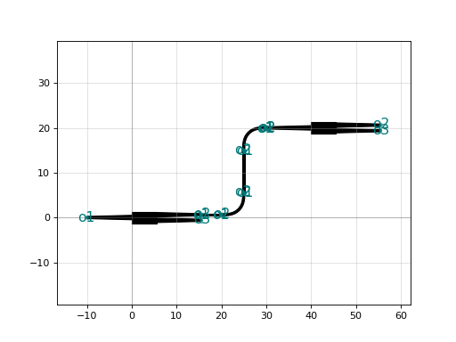
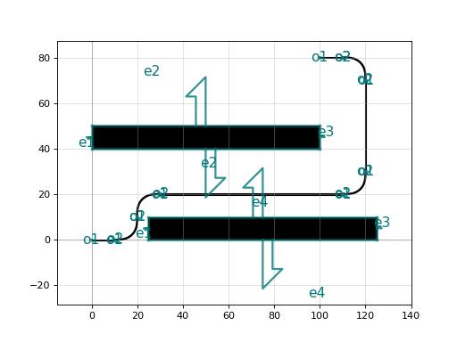
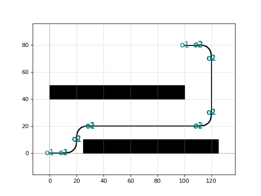
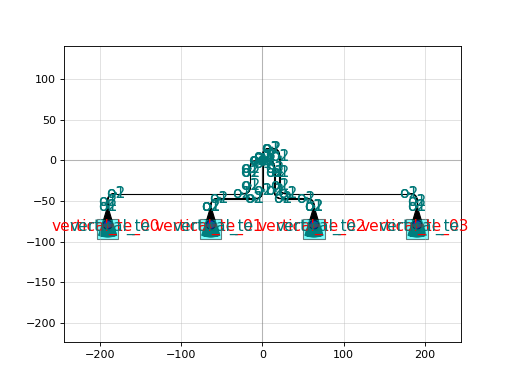

Routing#
get_route#
get_route returns a Manhattan route between two ports.
get_route only works for an individual routes. For routing groups of ports you need to use get_bundle instead
To make a route, you need to supply:
input port
output port
bend
straight
taper to taper to wider straights and reduce straight loss (Optional)
To generate a straight route:
1. Generate the backbone of the route. This is a list of manhattan coordinates that the route would pass through if it used only sharp bends (right angles)
2. Replace the corners by bend references (with rotation and position computed from the manhattan backbone)
Add tapers if needed and if space permits
generate straight portions in between tapers or bends
A Route is a dataclass with:
references: list of references for tapers, bends and straight waveguides
ports: a dict of port name to Port, usually two ports “input” and “output”
length: a float with the length of the route
- gdsfactory.routing.get_route.get_route(input_port, output_port, bend=<function bend_euler>, straight=<function straight>, taper=None, start_straight_length=0.01, end_straight_length=0.01, min_straight_length=0.01, cross_section=functools.partial(<cyfunction cross_section>), **kwargs)[source]#
Returns a Manhattan Route between 2 ports The references are straights, bends and tapers. get_route is an automatic version of get_route_from_steps
- Parameters
input_port (
Port) – start port.output_port (
Port) – end port.bend (
Union[str,Callable[...,Component],Component,Dict[str,Any]]) – function that return bendsstraight (
Union[str,Callable[...,Component],Component,Dict[str,Any]]) – function that returns straightstaper (
Union[str,Callable[...,Component],Component,Dict[str,Any],None]) –start_straight_length (
float) – length of starting straightend_straight_length (
float) – length of end straightmin_straight_length (
float) – min length of straight for any intermediate segmentcross_section (
Union[str,Callable[...,CrossSection],CrossSection,Dict[str,Any]]) –kwargs – cross_section settings
import gdsfactory as gf c = gf.Component('sample_connect') mmi1 = c << gf.components.mmi1x2() mmi2 = c << gf.components.mmi1x2() mmi2.move((40, 20)) route = gf.routing.get_route(mmi1.ports["o2"], mmi2.ports["o1"], radius=5) c.add(route.references) c.plot()
(Source code, png, hires.png, pdf)
 - Return type
Route
{kind=link}
{kind=link}
- gdsfactory.routing.get_route.get_route_electrical(input_port: gdsfactory.port.Port, output_port: gdsfactory.port.Port, *, bend: typing.Union[str, typing.Callable[[...], gdsfactory.component.Component], gdsfactory.component.Component, typing.Dict[str, typing.Any]] = <function wire_corner>, straight: typing.Union[str, typing.Callable[[...], gdsfactory.component.Component], gdsfactory.component.Component, typing.Dict[str, typing.Any]] = <function straight>, taper: typing.Optional[typing.Union[str, typing.Callable[[...], gdsfactory.component.Component], gdsfactory.component.Component, typing.Dict[str, typing.Any]]] = None, start_straight_length: float = 10, end_straight_length: float = 10, min_straight_length: float = 2.0, cross_section: typing.Union[str, typing.Callable[[...], gdsfactory.cross_section.CrossSection], gdsfactory.cross_section.CrossSection, typing.Dict[str, typing.Any]] = functools.partial(<cyfunction cross_section>, layer=(49, 0), width=10.0, port_names=('e1', 'e2'), port_types=('electrical', 'electrical')), **kwargs) gdsfactory.types.Route#
Returns a Manhattan Route between 2 ports The references are straights, bends and tapers. get_route is an automatic version of get_route_from_steps
- Parameters
input_port – start port.
output_port – end port.
bend – function that return bends
straight – function that returns straights
taper –
start_straight_length – length of starting straight
end_straight_length – length of end straight
min_straight_length – min length of straight for any intermediate segment
cross_section –
kwargs – cross_section settings
import gdsfactory as gf c = gf.Component('sample_connect') mmi1 = c << gf.components.mmi1x2() mmi2 = c << gf.components.mmi1x2() mmi2.move((40, 20)) route = gf.routing.get_route(mmi1.ports["o2"], mmi2.ports["o1"], radius=5) c.add(route.references) c.plot()
(Source code, png, hires.png, pdf)

{kind=link}
{kind=link}
- gdsfactory.routing.get_route.get_route_from_waypoints(waypoints, bend=<function bend_euler>, straight=<function straight>, taper=<function taper>, cross_section=functools.partial(<cyfunction cross_section>), **kwargs)[source]#
Returns a route formed by the given waypoints with bends instead of corners and optionally tapers in straight sections. Tapering to wider straights reduces the optical loss. get_route_from_waypoints is a manual version of get_route get_route_from_steps is a more concise and convenient version of get_route_from_waypoints also available in gf.routing
- Parameters
waypoints (
Tuple[Tuple[float,float],...]) – Coordinates that define the routebend (
Callable) – function that returns bendsstraight (
Callable) – function that returns straight waveguidestaper (
Optional[Callable]) – function that returns taperscross_section (
Union[str,Callable[...,CrossSection],CrossSection,Dict[str,Any]]) –kwargs – cross_section settings
import gdsfactory as gf c = gf.Component("waypoints_sample") w = gf.components.straight() left = c << w right = c << w right.move((100, 80)) obstacle = gf.components.rectangle(size=(100, 10)) obstacle1 = c << obstacle obstacle2 = c << obstacle obstacle1.ymin = 40 obstacle2.xmin = 25 p0x, p0y = left.ports["o2"].midpoint p1x, p1y = right.ports["o2"].midpoint o = 10 # vertical offset to overcome bottom obstacle ytop = 20 routes = gf.routing.get_route_from_waypoints( [ (p0x, p0y), (p0x + o, p0y), (p0x + o, ytop), (p1x + o, ytop), (p1x + o, p1y), (p1x, p1y), ], ) c.add(routes.references) c.plot()
(Source code, png, hires.png, pdf)
 - Return type
Route
{kind=link}
{kind=link}
get_route_from_steps#
- gdsfactory.routing.get_route_from_steps.get_route_from_steps(port1, port2, steps=None, bend='bend_euler', straight='straight', taper='taper', cross_section=functools.partial(<cyfunction cross_section>), **kwargs)[source]#
Returns a route formed by the given waypoints steps bends instead of corners and optionally tapers in straight sections. Tapering to wider straights reduces the optical loss. get_route_from_steps is a manual version of get_route and a more concise and convenient version of get_route_from_waypoints
- Parameters
port1 (
Port) – start portport2 (
Port) – end portsteps (
Optional[List[Dict[str,float]]]) – changes that define the route [{‘dx’: 5}, {‘dy’: 10}]bend (
Union[str,Callable[...,Component],Component,Dict[str,Any]]) – function that returns bendsstraight (
Union[str,Callable[...,Component],Component,Dict[str,Any]]) – function that returns straight waveguidestaper (
Union[str,Callable[...,Component],Component,Dict[str,Any],None]) – function that returns taperscross_section (
Union[str,Callable[...,CrossSection],CrossSection,Dict[str,Any]]) –**kwargs – cross_section settings
import gdsfactory as gf c = gf.Component("get_route_from_steps_sample") w = gf.components.straight() left = c << w right = c << w right.move((100, 80)) obstacle = gf.components.rectangle(size=(100, 10), port_type=None) obstacle1 = c << obstacle obstacle2 = c << obstacle obstacle1.ymin = 40 obstacle2.xmin = 25 p1 = left.ports['o2'] p2 = right.ports['o2'] route = gf.routing.get_route_from_steps( port1=p1, port2=p2, steps=[ {"x": 20}, {"y": 20}, {"x": 120}, {"y": 80}, ], ) c.add(route.references) c.plot() c.show()
(Source code, png, hires.png, pdf)
 - Return type
Route
{kind=link}
{kind=link}
- gdsfactory.routing.get_route_from_steps.get_route_from_steps_electrical(port1: gdsfactory.port.Port, port2: gdsfactory.port.Port, steps: Optional[List[Dict[str, float]]] = None, *, bend: Union[str, Callable[[...], gdsfactory.component.Component], gdsfactory.component.Component, Dict[str, Any]] = 'wire_corner', straight: Union[str, Callable[[...], gdsfactory.component.Component], gdsfactory.component.Component, Dict[str, Any]] = 'straight', taper: Optional[Union[str, Callable[[...], gdsfactory.component.Component], gdsfactory.component.Component, Dict[str, Any]]] = None, cross_section: Union[str, Callable[[...], gdsfactory.cross_section.CrossSection], gdsfactory.cross_section.CrossSection, Dict[str, Any]] = 'metal3', **kwargs) gdsfactory.types.Route#
Returns a route formed by the given waypoints steps bends instead of corners and optionally tapers in straight sections. Tapering to wider straights reduces the optical loss. get_route_from_steps is a manual version of get_route and a more concise and convenient version of get_route_from_waypoints
- Parameters
port1 – start port
port2 – end port
steps – changes that define the route [{‘dx’: 5}, {‘dy’: 10}]
bend – function that returns bends
straight – function that returns straight waveguides
taper – function that returns tapers
cross_section –
**kwargs – cross_section settings
import gdsfactory as gf c = gf.Component("get_route_from_steps_sample") w = gf.components.straight() left = c << w right = c << w right.move((100, 80)) obstacle = gf.components.rectangle(size=(100, 10), port_type=None) obstacle1 = c << obstacle obstacle2 = c << obstacle obstacle1.ymin = 40 obstacle2.xmin = 25 p1 = left.ports['o2'] p2 = right.ports['o2'] route = gf.routing.get_route_from_steps( port1=p1, port2=p2, steps=[ {"x": 20}, {"y": 20}, {"x": 120}, {"y": 80}, ], ) c.add(route.references) c.plot() c.show()
(Source code, png, hires.png, pdf)

{kind=link}
{kind=link}
get_bundle#
Often, several ports have to be linked together without them crossing each other. One way to tackle simple cases is to use bundle routing. Several functions are available depending on the use case:
- gdsfactory.routing.get_bundle.get_bundle(ports1, ports2, separation=5.0, extension_length=0.0, straight=<function straight>, bend=<function bend_euler>, sort_ports=True, cross_section='strip', **kwargs)[source]#
Connects a bundle of ports with a river router. Chooses the correct u_bundle to use based on port angles ports1 and ports2 should all be facing in the same direction.
- Parameters
ports1 (
List[Port]) – list of starting ports.ports2 (
List[Port]) – list of end ports.separation (
float) – bundle separation (center to center).extension_length (
float) – adds straight extension.bend (
Union[str,Callable[...,Component],Component,Dict[str,Any]]) – function for the bend. Defaults to euler.sort_ports (
bool) – sort port coordinates.cross_section (
Union[str,Callable[...,CrossSection],CrossSection,Dict[str,Any]]) – CrossSection or function that returns a cross_section.
- Keyword Arguments
width – main layer waveguide width (um).
layer – main layer for waveguide.
layer_bbox – optional bounding box layer for device recognition. (68, 0)
width_wide – wide waveguides width (um) for low loss routing.
auto_widen – taper to wide waveguides for low loss routing.
auto_widen_minimum_length – minimum straight length for auto_widen.
taper_length – taper_length for auto_widen.
bbox_layers – list of layers for rectangular bounding box.
bbox_offsets – list of bounding box offsets.
radius – bend radius (um).
sections – list of Sections(width, offset, layer, ports).
port_names – for input and output (‘o1’, ‘o2’).
port_types – for input and output: electrical, optical, vertical_te …
min_length – defaults to 1nm = 10e-3um for routing.
start_straight_length – straight length at the beginning of the route.
end_straight_length – end length at the beginning of the route.
snap_to_grid – can snap points to grid when extruding the path.
- Return type
List[Route]
Example with two arrays of ports connected using get_bundle
import gdsfactory as gf
@gf.cell
def test_north_to_south():
dy = 200.0
xs1 = [-500, -300, -100, -90, -80, -55, -35, 200, 210, 240, 500, 650]
pitch = 10.0
N = len(xs1)
xs2 = [-20 + i * pitch for i in range(N // 2)]
xs2 += [400 + i * pitch for i in range(N // 2)]
a1 = 90
a2 = a1 + 180
ports1 = [gf.Port("top_{}".format(i), (xs1[i], 0), 0.5, a1) for i in range(N)]
ports2 = [gf.Port("bottom_{}".format(i), (xs2[i], dy), 0.5, a2) for i in range(N)]
c = gf.Component()
routes = gf.routing.get_bundle(ports1, ports2)
for route in routes:
c.add(route.references)
return c
c = test_north_to_south()
c.show()
c.plot()
get bundle is the generic river routing function that will call different function depending on the port orientation. Get bundle acts as a high level entry point. Based on the angle configurations of the banks of ports, it decides which sub-routine to call:
get_bundle_same_axis, banks or ports facing each other (but with arbitrary and varying pitch on each side)
get_bundle_corner, banks of ports with 90Deg / 270Deg between them (again pitch is flexible on both sides)
get_bundle_udirect, banks of ports with direct U-turns
get_bundle_uindirect, banks of ports with indirect U-turns
Or you can also call each functions individually
- gdsfactory.routing.get_bundle.get_bundle_same_axis(ports1, ports2, separation=5.0, end_straight_length=0.0, start_straight_length=0.0, bend=<function bend_euler>, sort_ports=True, cross_section=functools.partial(<cyfunction cross_section>), **kwargs)[source]#
Semi auto-routing for two lists of ports.
- Parameters
ports1 (
List[Port]) – first list of portsports2 (
List[Port]) – second list of portsseparation (
float) – minimum separation between two straightsaxis – specifies “X” or “Y” X (resp. Y) -> indicates that the ports should be sorted and compared using the X (resp. Y) axis
route_filter – filter to apply to the manhattan waypoints e.g get_route_from_waypoints for deep etch strip straight
end_straight_length (
float) – offset to add at the end of each straightsort_ports (
bool) – sort the ports according to the axis.cross_section (
Union[str,Callable[...,CrossSection],CrossSection,Dict[str,Any]]) – CrossSection or function that returns a cross_section.kwargs – cross_section settings
- Return type
List[Route]- Returns
[route_filter(r) for r in routes] list of lists of coordinates e.g with default get_route_from_waypoints, returns a list of elements which can be added to a component
The routing assumes manhattan routing between the different ports. The strategy is to modify start_straight and end_straight for each straight such that straights do not collide.
1 X X X X X X |-----------| | | | | |-----------------------| | |-----| | | |---------------| | | | || |------| | | 2 X X X X X X
ports1: at the top ports2: at the bottom
The general strategy is: Group tracks which would collide together and apply the following method on each group:
- if x2 >= x1, increase
end_straight (as seen on the right 3 ports)
- otherwise, decrease
end_straight (as seen on the first 2 ports)
- We deal with negative end_straight by doing at the end
end_straights = end_straights - min(end_straights)
This method deals with different metal track/wg/wire widths too.
- gdsfactory.routing.get_bundle_corner.get_bundle_corner(ports1, ports2, route_filter=<function get_route_from_waypoints>, separation=5.0, **kwargs)[source]#
- Parameters
ports1 (
List[Port]) – list of start portsports2 (
List[Port]) – list of end portsroute_filter (
Callable[...,Route]) – filter to apply to the manhattan waypoints e.g get_route_from_waypoints for deep etch strip straight
- Return type
List[Route]- Returns
[route_filter(r) for r in routes] where routes is a list of lists of coordinates e.g with default get_route_from_waypoints, returns a list of elements which can be added to a component
Bend-types 90 Deg bend A1 A2 AN | | ... | | | / / / / / / / B1 ----/ / _/ B2 -----/ / / ... _/ BN --------/ 270 Deg bend /------------\ / \ / /-------\ \ / / \ \ | / /--\ | | | / / | | ...| | | / B1 B2 BN | | | | \ \--- A1 | ----- A2 | ... \------ AN
Connect banks of ports with either 90Deg or 270Deg angle between them
- gdsfactory.routing.get_bundle_u.get_bundle_udirect(ports1, ports2, route_filter=<function get_route_from_waypoints>, separation=5.0, start_straight_length=0.01, end_straight_length=0.01, bend=<function bend_euler>, **routing_params)[source]#
- Parameters
ports1 (
List[Port]) – list of start portsports2 (
List[Port]) – list of end portsroute_filter (
Callable) – filter to apply to the manhattan waypoints e.g get_route_from_waypoints for deep etch strip straightseparation (
float) – between straightsstart_straight_length (
float) –end_straight_length (
float) –start_straight_offset –
end_straight_offset –
- Return type
List[Route]- Returns
[route_filter(r) for r in routes] where routes is a list of lists of coordinates e.g with default get_route_from_waypoints, returns list of elements which can be added to a component
Used for routing multiple ports back to a bundled input in a component
X: start ports D: End ports On this example bellow, the axis is along X X------\ | X----\ | ... | | X--\ | | | | | D-------------------/ | | ... | | D---------------------/ | D----------------------- D-----------------------\ D---------------------\ | ... | | D-------------------\ | | | | | X--/ | | ... | | X----/ | | X------/
- gdsfactory.routing.get_bundle_u.get_bundle_uindirect(ports1, ports2, route_filter=<function get_route_from_waypoints>, separation=5.0, extension_length=0.0, start_straight_length=0.01, end_straight_length=0.01, **routing_params)[source]#
- Parameters
ports1 – list of start ports
ports2 – list of end ports
route_filter – filter to apply to the manhattan waypoints e.g get_route_from_waypoints for deep etch strip straight
separation (
float) – center to center waveguide spacingextension_length (
float) –start_straight_length (
float) – extendsend_straight_length (
float) –
- Return type
List[Route]- Returns
list of routes, where each route has references, ports and length
Used for routing multiple ports back to a bundled input in a component
X: start ports D: End ports X------ X---- | ... | | X--\ | | | | | /--------------------------/ | | | | | | /--------------------------/ | | | | | | /--------------------------/ | | | | | \--D | \----D | ... \------D /------D | ... | /----D | | /--D | | | | | \-------------------------- | | | | \--------------------------\ | | | | \--------------------------\ | | | | | X--/ | | ... | | X----/ | X------/ '''
get_bundle_from_steps#
- gdsfactory.routing.get_bundle_from_steps.get_bundle_from_steps(ports1, ports2, steps=None, bend=<function bend_euler>, straight=<function straight>, taper=<function taper>, cross_section='strip', sort_ports=True, separation=None, **kwargs)[source]#
Returns a list of routes formed by the given waypoints steps bends instead of corners and optionally tapers in straight sections. Tapering to wider straights reduces the optical loss and phase errors. get_bundle_from_steps is a manual version of get_bundle and a more convenient version of get_bundle_from_waypoints
- Parameters
port1 – start ports (list or dict)
port2 – end ports (list or dict)
steps (
Optional[List[Dict[str,float]]]) – changes that define the route [{‘dx’: 5}, {‘dy’: 10}]bend (
Union[str,Callable[...,Component],Component,Dict[str,Any]]) – function that returns bendsstraight (
Union[str,Callable[...,Component],Component,Dict[str,Any]]) – function that returns straight waveguidestaper (
Union[str,Callable[...,Component],Component,Dict[str,Any],None]) – function that returns taperscross_section (
Union[str,Callable[...,CrossSection],CrossSection,Dict[str,Any]]) – for routessort_ports (
bool) – if True sort portsseparation (
Optional[float]) – center to center, defaults to ports1 separationkwargs – cross_section settings
import gdsfactory as gf c = gf.Component("get_route_from_steps_sample") w = gf.components.array( gf.partial(gf.components.straight, layer=(2, 0)), rows=3, columns=1, spacing=(0, 50), ) left = c << w right = c << w right.move((200, 100)) p1 = left.get_ports_list(orientation=0) p2 = right.get_ports_list(orientation=180) routes = get_bundle_from_steps( p1, p2, steps=[{"x": 150}], ) for route in routes: c.add(route.references) c.plot() c.show()
- Return type
List[Route]
route_ports_to_side#
For now get_bundle is not smart enough to decide whether it should call route_ports_to_side. So you either need to connect your ports to face in one direction first, or to use route_ports_to_side before calling get_bundle
- gdsfactory.routing.route_ports_to_side.route_ports_to_side(ports, side='north', x=None, y=None, routing_func=<function get_route>, **kwargs)[source]#
Routes ports to a given side
- Parameters
ports (
Union[Dict[str,Port],List[Port],Component,ComponentReference]) – list/dict/Component/ComponentReference to route to a side.side (
str) – ‘north’, ‘south’, ‘east’ or ‘west’.x (
Optional[float]) – position to route ports for east/west. None, uses most east/west valuey (
Optional[float]) – position to route ports for south/north. None, uses most north/south valuerouting_func – the routing function. By default uses get_route
kwargs – radius separation extend_bottom/extend_top for east/west routing extend_left, extend_right for south/north routing
- Returns
List of ports:
- Return type
List of routes
get_bundle_from_waypoints#
- gdsfactory.routing.get_bundle_from_waypoints.get_bundle_from_waypoints(ports1, ports2, waypoints, straight=<function straight>, taper=<function taper>, bend=<function bend_euler>, sort_ports=True, cross_section=functools.partial(<cyfunction cross_section>), separation=None, on_route_error=<function get_route_error>, **kwargs)[source]#
Returns list of routes that connect bundle of ports with bundle of routes where routes follow a list of waypoints.
- Parameters
ports1 (
List[Port]) – list of portsports2 (
List[Port]) – list of portswaypoints (
Tuple[Tuple[float,float],...]) – list of points defining a routestraight (
Union[str,Callable[...,Component],Component,Dict[str,Any]]) – function that returns straightstaper (
Union[str,Callable[...,Component],Component,Dict[str,Any]]) – function that returns tapersbend (
Union[str,Callable[...,Component],Component,Dict[str,Any]]) – function that returns bendssort_ports (
bool) – sorts portscross_section (
Union[str,Callable[...,CrossSection],CrossSection,Dict[str,Any]]) – cross_sectionseparation (
Optional[float]) – center to center, defaults to ports1 separation**kwargs – cross_section settings
- Return type
List[Route]
import numpy as np
import gdsfactory as gf
@gf.cell
def test_connect_bundle_waypoints():
"""Connect bundle of ports with bundle of routes following a list of waypoints."""
xs1 = np.arange(10) * 5 - 500.0
N = xs1.size
ys2 = np.array([0, 5, 10, 20, 25, 30, 40, 55, 60, 75]) + 500.0
ports1 = [gf.Port(f"A_{i}", (xs1[i], 0), 0.5, 90) for i in range(N)]
ports2 = [gf.Port(f"B_{i}", (0, ys2[i]), 0.5, 180) for i in range(N)]
c = gf.Component()
waypoints = [
ports1[0].position + (0, 100),
ports1[0].position + (200, 100),
ports1[0].position + (200, -200),
ports1[0].position + (0, -200),
ports1[0].position + (0, -350),
ports1[0].position + (400, -350),
(ports1[0].x + 400, ports2[0].y),
]
routes = gf.routing.get_bundle_from_waypoints(ports1, ports2, waypoints)
for route in routes:
c.add(route.references)
return c
cell = test_connect_bundle_waypoints()
cell.plot()
get_bundle_path_length_match#
- gdsfactory.routing.get_bundle_path_length_match.get_bundle_path_length_match(ports1, ports2, separation=30.0, end_straight_length=None, extra_length=0.0, nb_loops=1, modify_segment_i=-2, bend=<function bend_euler>, straight=<function straight>, taper=<function taper>, start_straight_length=0.0, route_filter=<function get_route_from_waypoints>, sort_ports=True, cross_section=functools.partial(<cyfunction cross_section>), **kwargs)[source]#
Returns list of routes that are path length matched.
- Parameters
ports1 (
List[Port]) – list of portsports2 (
List[Port]) – list of portsseparation (
float) – between the loopsend_straight_length (
Optional[float]) – if None tries to determine itextra_length (
float) – distance added to all path length compensation. Useful is we want to add space for extra taper on all branchesnb_loops (
int) – number of extra loops added in the pathmodify_segment_i (
int) – index of the segment that accomodates the new turns default is next to last segmentbend (
Union[str,Callable[...,Component],Component,Dict[str,Any]]) – for bendsstraight (
Union[str,Callable[...,Component],Component,Dict[str,Any]]) – for straightstaper (
Union[str,Callable[...,Component],Component,Dict[str,Any],None]) –start_straight_length (
float) –route_filter (
Callable) – get_route_from_waypointssort_ports (
bool) – sorts ports before routingcross_section (
Union[str,Callable[...,CrossSection],CrossSection,Dict[str,Any]]) – factory**kwargs – cross_section settings
Tips:
If path length matches the wrong segments, change modify_segment_i arguments.
Adjust nb_loops to avoid too short or too long segments
Adjust separation and end_straight_offset to avoid compensation collisions
import gdsfactory as gf c = gf.Component("path_length_match_sample") dy = 2000.0 xs1 = [-500, -300, -100, -90, -80, -55, -35, 200, 210, 240, 500, 650] pitch = 100.0 N = len(xs1) xs2 = [-20 + i * pitch for i in range(N)] a1 = 90 a2 = a1 + 180 ports1 = [gf.Port(f"top_{i}", (xs1[i], 0), 0.5, a1) for i in range(N)] ports2 = [gf.Port(f"bottom_{i}", (xs2[i], dy), 0.5, a2) for i in range(N)] routes = gf.routing.get_bundle_path_length_match( ports1, ports2, extra_length=44 ) for route in routes: c.add(route.references) c.plot()
- Return type
List[Route]
add_fiber_array / add_fiber_single#
In cases where individual components have to be tested, you can generate the array of optical I/O and connect them to the component.
You can connect the waveguides to a 127um pitch fiber array.
- gdsfactory.routing.add_fiber_array.add_fiber_array(component='mmi2x2', grating_coupler=functools.partial(<function grating_coupler_elliptical_trenches>, polarization='te', taper_angle=35), straight=<function straight>, bend=<function bend_euler>, gc_port_name='o1', gc_port_labels=None, component_name=None, select_ports=functools.partial(<function select_ports>, port_type='optical'), cross_section=functools.partial(<cyfunction cross_section>), get_input_labels_function=<function get_input_labels>, layer_label=(66, 0), **kwargs)[source]#
Returns component with optical IO (tapers, south routes and grating_couplers). adds a grating_coupler
- Parameters
component (
Union[str,Callable[...,Component],Component,Dict[str,Any]]) – component or component function to connect to grating couplers.grating_coupler (
Union[str,Callable[...,Component],Component,Dict[str,Any],List[Union[str,Callable[...,Component],Component,Dict[str,Any]]]]) – fiber coupler instance, function or list of functions.straight (
Union[str,Callable[...,Component],Component,Dict[str,Any]]) – straight function.bend (
Union[str,Callable[...,Component],Component,Dict[str,Any]]) – bend function.gc_port_name (
str) – grating coupler input port name.gc_port_labels (
Optional[Tuple[str,...]]) – grating coupler list of labels.component_name (
Optional[str]) – for the label.select_ports (
Callable) – function to select ports.cross_section (
Union[str,Callable[...,CrossSection],CrossSection,Dict[str,Any]]) – cross_section function.layer_label (
Optional[Tuple[int,int]]) – LAYER.LABELget_input_labels_function (
Optional[Callable]) – function to get input labels for grating couplers.
- Keyword Arguments
taper – taper function name or dict.
get_input_label_text_loopback_function – function to get input label test.
get_input_label_text_function. –
straight – straight.
fanout_length – None # if None, automatic calculation of fanout length
max_y0_optical – None.
with_loopback – True, adds loopback structures
straight_separation – 4.0.
list_port_labels – None, adds TM labels to port indices in this list.
connected_port_list_ids – None # only for type 0 optical routing
nb_optical_ports_lines – 1
force_manhattan – False
excluded_ports – list of ports to exclude from adding fiber coupler.
grating_indices – list of grating coupler indices.
routing_straight – None
routing_method – get_route
optical_routing_type – None: auto, 0: no extension, 1: standard, 2: check
gc_rotation – fiber coupler rotation in degrees. Defaults to -90.
input_port_indexes – [0]
import gdsfactory as gf gf.config.set_plot_options(show_subports=False) c = gf.components.crossing() cc = gf.routing.add_fiber_array( component=c, optical_routing_type=2, grating_coupler=gf.components.grating_coupler_elliptical_te, with_loopback=False ) cc.plot()
(Source code, png, hires.png, pdf)
 - Return type
{kind=link}
{kind=link}
Or can also connect to individual fibers for input and output.
- gdsfactory.routing.add_fiber_single.add_fiber_single(component='mmi2x2', grating_coupler=functools.partial(<function grating_coupler_elliptical_trenches>, polarization='te', taper_angle=35), layer_label=(201, 0), fiber_spacing=50.0, bend=<function bend_euler>, straight=<function straight>, route_filter=<function get_route_from_waypoints>, min_input_to_output_spacing=200.0, optical_routing_type=2, with_loopback=True, loopback_xspacing=50.0, component_name=None, gc_port_name='o1', zero_port='o1', get_input_label_text_loopback_function=<function get_input_label_text_loopback>, get_input_label_text_function=<function get_input_label_text>, select_ports=functools.partial(<function select_ports>, port_type='optical'), cross_section='strip', **kwargs)[source]#
Returns component with grating couplers and labels on each port.
- Parameters
component (
Union[str,Callable[...,Component],Component,Dict[str,Any]]) – component or component function to connect to grating couplers.grating_coupler (
Union[str,Callable[...,Component],Component,Dict[str,Any],List[Union[str,Callable[...,Component],Component,Dict[str,Any]]]]) – grating coupler instance, function or list of functionslayer_label (
Tuple[int,int]) – for test and measurement labelfiber_spacing (
float) – between outputsbend (
Union[str,Callable[...,Component],Component,Dict[str,Any]]) – bend function.straight (
Union[str,Callable[...,Component],Component,Dict[str,Any]]) – straight function.route_filter (
Callable) –min_input_to_output_spacing (
float) – spacing from input to output fibermax_y0_optical – None
with_loopback (
bool) – True, adds loopback reference straight waveguide.loopback_xspacing (
float) – spacing from loopback xmin to component.xminstraight_separation – spacing between waveguides.
list_port_labels – None, add labels to port indices in this list
connected_port_list_ids – None # only for type 0 optical routing
nb_optical_ports_lines –
force_manhattan – False.
excluded_ports – list of ports to exclude.
grating_indices – None.
routing_method – function to ge the route.
gc_port_name (
str) – grating coupler name.zero_port (
Optional[str]) – name of the port to move to (0, 0) for the routing to work correctly.get_input_labels_function – function to get input labels for grating couplers.
optical_routing_type (
int) – None: autoselection, 0: no extension.gc_rotation – grating_coupler rotation (deg).
component_name (
Optional[str]) – name of component.cross_section (
Union[str,Callable[...,CrossSection],CrossSection,Dict[str,Any]]) – cross_section factory.get_input_label_text_function (
Callable) – for the grating couplers input labelget_input_label_text_loopback_function (
Callable) – for the loopacks input labelkwargs – cross_section settings
asumes grating coupler has o1 input port facing west at xmin = 0 ___________ /| | | | | | / | | | | | | o1| | | | | | | \ | | | | | | | \|_|_|_|_|_| | xmin = 0
import gdsfactory as gf c = gf.components.crossing() cc = gf.routing.add_fiber_single( component=c, optical_routing_type=0, grating_coupler=gf.components.grating_coupler_elliptical_te, ) cc.plot()
(Source code, png, hires.png, pdf)

- Return type
{kind=link}
{kind=link}